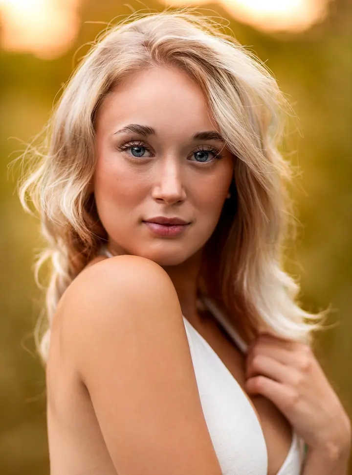
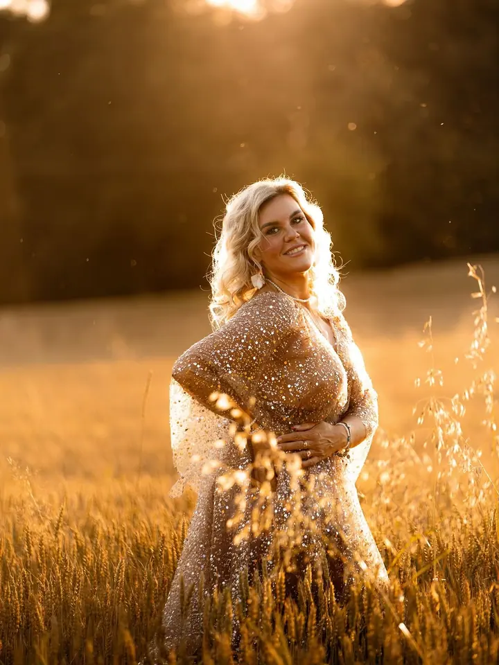
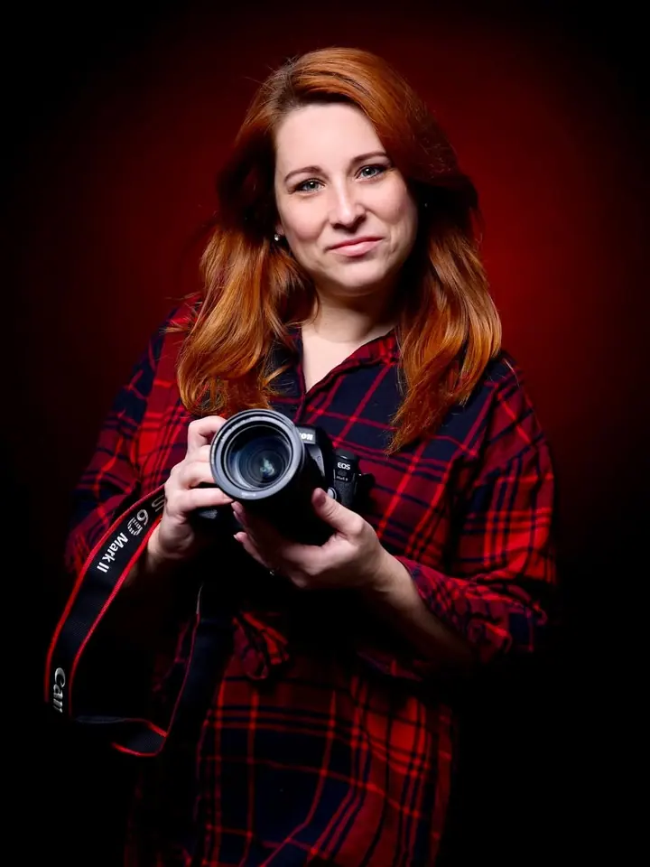

Ženské portréty
Jemné portréty, na kterých uvidíte svou krásu a sebevědomí. Dopřejte si radost, relax a den jen pro sebe, klidně i s vizážistkou.

Jmenuji se Veronika Boturová a fotím jemné ženské portréty a rodiny s dětmi na Karvinsku. Ateliér mám v Dětmarovicích, ale ráda s vámi vyrazím i ven do přírody, třeba na…
Rezervovat termínMy ženy chceme mít památku na všechny důležité chvíle, na děti, na rodinu. Na sebe ale často zapomínáme. Proto chci, abyste si u mě udělala radost a dopřála si den jen pro sebe. Pomáhám ženám vidět svou krásu a sebevědomí, které v nich je.


Fotím ve svém ateliéru v Dětmarovicích nebo venku. Pokud máte oblíbené místo, stačí napsat. Když žádné nemáte, vybereme ho spolu. Na focení přijíždějí ženy a rodiny z Orlové, Havířova, Karviné i dalších míst v okolí.
Při rodinném focení se nikam nespěchá. Zaměřuji se na to, aby se vy i vaše děti cítili pohodlně a uvolněně. Pak vzniknou fotky, ke kterým se budete s úsměvem vracet.
Co fotím
Jemné portréty, na kterých uvidíte svou krásu a sebevědomí. Dopřejte si radost, relax a den jen pro sebe, klidně i s vizážistkou.
Pohodové a klidné focení, při kterém dbám na vaše pohodlí i na pohodlí vašich dětí. Vznikne z něj památka, na které budete celá rodina.
Postup
Ozvěte se přes formulář, e-mailem nebo na Instagramu. Ráda vám pošlu ceník a odpovím na všechny otázky.
Vyberete si ateliér v Dětmarovicích, nebo exteriér. Když nemáte oblíbené místo, najdeme ho spolu.
Focení je klidné a pohodové, bez spěchu. Pokud chcete, přizveme i vizážistku.
Fotky pečlivě upravím a předám vám je jako památku, ke které se budete rádi vracet.
Otázky
V mém fotoateliéru v Dětmarovicích nebo venku. Exteriér můžete doporučit sami, jinak po dohodě s vámi vyberu místo já.
Ano, na ženské portréty spolupracuji s vizážistkou. Nalíčí vás jemně, stejně dobře ale zvládne i odvážnější nebo extravagantní styl.
Na focení necháváme dost času a přizpůsobím se dětem. Hlavně chci, aby se cítily dobře a bavilo je to.
Ceník vám ráda pošlu. Stačí mi napsat přes formulář nebo e-mail.